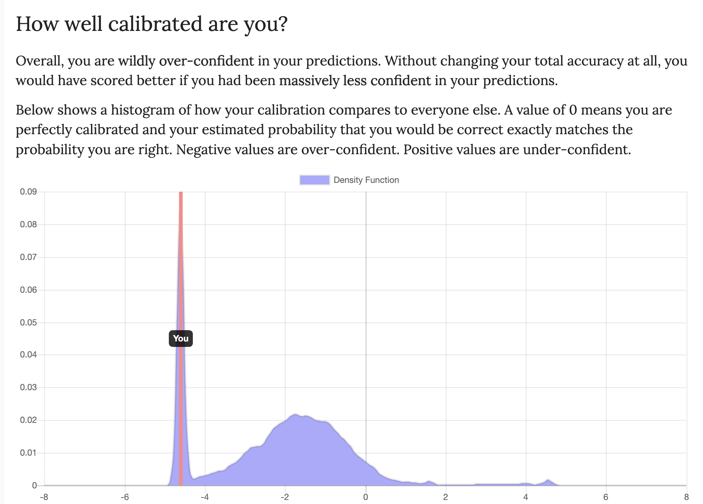

Gen-ai Chatbot
I built a customized chatbot that uses Gemini API. To encourage spontaniety and reduce passiveness during chat sessions, the chatbot, the chatbot always provides a short fun fact before answering every question.
← Back to ProjectsPictures

Fig 1.1 2-Bit Adder

Fig 1.2 2-Bit Subtractor
Design Choices for Command Line Interface
The interface is a typical terminal Command Line Interface, so most of the design choices simply consisted of adhering to the standard look. I chose to use "> " at the start of each input line because it is common in CLIs. If the user is used to that convention, they intuivitely see that they are being invited to type in input and press Return/Enter when done. The chatbot also starts with a "Hey, how can I help you?" greeting, inviting the user to interact with it.
Reflection
In-class Discussions
Our in-class discussions mainly involved seminar-like discussions centered around questions like "Does storing information count as knowledge?" and "Does knowledge have to be innate?" My initial beliefs about many of the questions discussed were clear. For example, I believed that storing information clearly doesn't mean that it is knowledge. I thought it was obvious. However, during class discussion, we discussed the role of consciousness in defining knowledge: "Does the subject need to be conscious of knowledge for it to be knowledge?" I realized that the answer to whether stored information should count as knowledge or not is not to be found in this question, but in the one about consicousness. Even then, provided counterexamples, like the one brought up by Alex of being in coma versus sleep, brought me to a conclusion that consciousness in the colloquial sense, is used broadly and hence that not all "consciousness" are the same. Some are deeper. And the depth of consciousness that the subject is in matters to determine whether they are able to have knowledge or not. These discussions have great implications in how we understand generative tools and other anthropoglossic technologies that seem to play a role of "knowing" things.
Pre-class Readings
One of the pre-class readings we did was about "bullshit machines." Developers Bergstrong and West witfully talk about what LLMs are not able to do, even if they seem that they they are doing. Those include things like feeling, following a moral framework (have moral sentiments), and reasoning like we humans do. I had an impression that this is information that I am very well aware of, and to which I am an unlikely victim. However, a GPT-4 Capability Forecasting Challenge exposed my fragilities in relation to my understanding of LLMs. The test provides questions and asks the user to predict how well a GPT-4 model LLM will do, with a confidence level ranging from 1 to 10. I was surprised to see that in the distribution comparing my results to other users who have taken the test, I was on the extreme side of overconfidence. This means that I likely overestimate the abilities of LLMs. I was suprised to see this because I like to think that I have a decent understanding of LLMs' abilities and limitations. All of this made me more aware of my biases while using LLMs. Below is a picture with my results from the test.

Works Cited
1. A GPT-4 capability forecasting challenge. (n.d.). Retrieved from https://nicholas.carlini.com/writing/llm-forecast/question/Capital-of-Paris
2. Lesson 6: No, they aren’t doing that. (n.d.). Retrieved from https://thebullshitmachines.com/lesson-6-no-theyre-not-doing-that/index.html